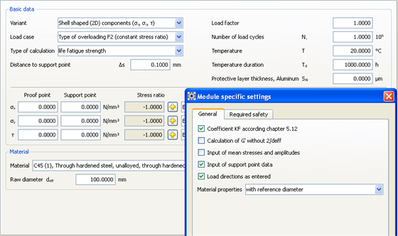

|
|
|


输入校核点和相邻点上的应力值
如果根据相邻点上的应力状态确定支撑系数，则将输入校核点 W 和相邻点 B 上的应力，以及从 B 点到 W 点的距离。（压应力以负值输入）：

图 57.2：输入校核点和相邻点上的应力值。输入相邻点距离。
English Original
Inputting the stress values on the proof point and on the neighboring point
If the support factor is determined according to the stress state on the neighboring point, then the stresses on the proof point W and on the neighboring point B, and also the distance from point B to point W, will be entered. (Enter compressive stresses as negative values.):
Figure 57.2: Inputting the stress values on the proof point and on the neighboring point. Inputting the neighboring point distance.